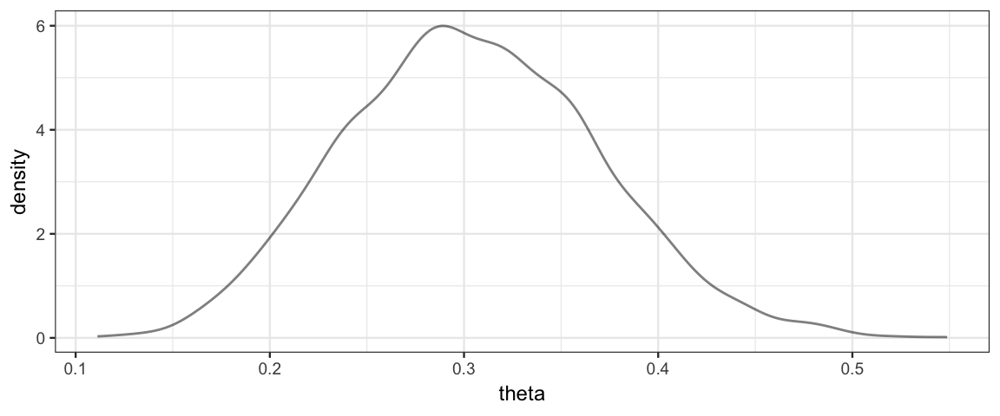
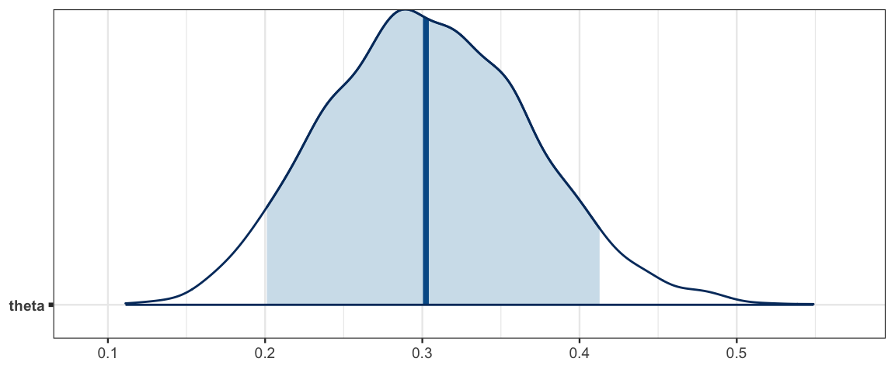
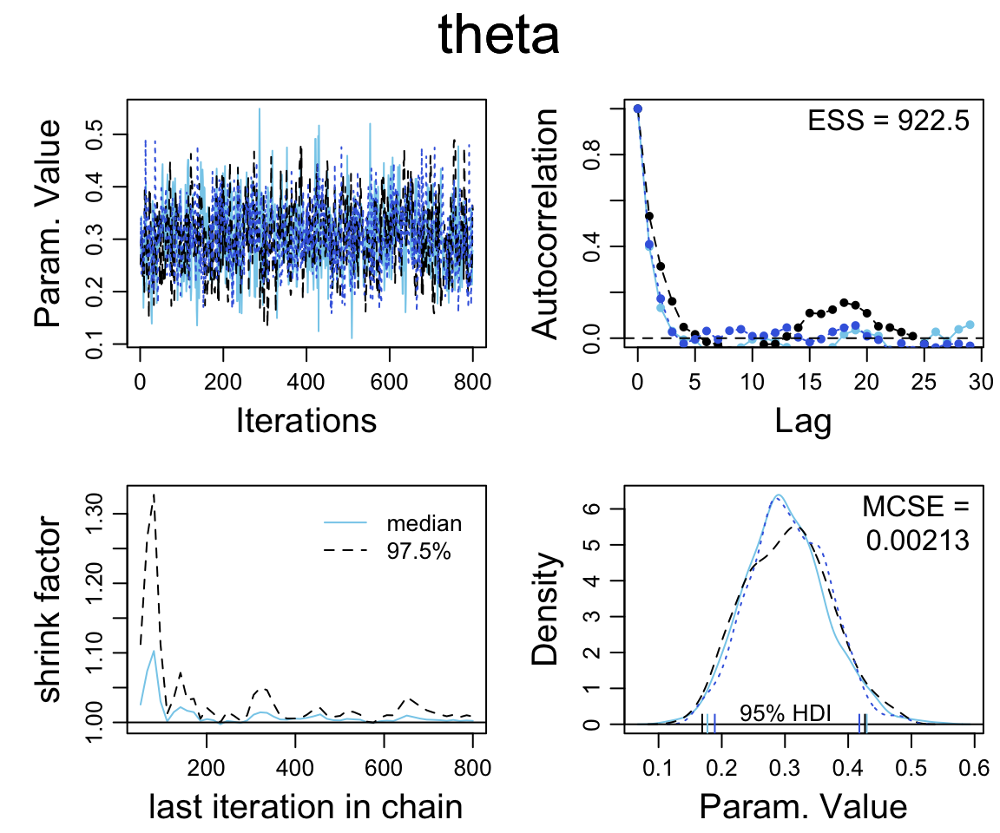

14 Stan
14.1 Why Stan might work better
Stan is sometimes (but not always) better or faster than JAGS. The reason is that the HMC (Hamilton Markov Chain) algorithm that it uses avoids some of the potential problems of the Metropolis algorithm and Gibbs sampler. You can think of HMC as a generlization of the Metropolis algorithm. Recall that in the Metropolis algorithm
- There is always a current vector of parameter values (like the current island in our story)
- A new vector of parameter values is proposed
- The proposal is accepted or rejected by comparing the ratio
of the likelihoods of the current and proposal vectors.
- It is important that we only need the ratio because the scaling constant would be prohibitively expensive to compute.
The main change is in how HMC chooses its proposals. Recall that in the basic Metropolis algorithm
- the proposal distribution is symmetric
- the proposal distribution is the same no matter where the current parameter vector is.
This has some potential negative consequences
- When the current position is a region of relatively low posterior density, the algorithm is as likely to propose moves that go farther from the mode as toward it. This can be inefficient.
- The behavior of the algorithm can be greatly affected by the “step size” (how likely the proposal is to be close to or far from the current position).
HMC addresses these by using a proposal distribution that * Changes depending on the current position * Is more likely to make proposals in the direction of the mode
Unlike Gibbs samplers, HMC is not guided by the fixed directions corresponding to letting only one parameter value change at a time. This makes it easier for HMC to navigate posteriors that have narrow “ridges” that don’t follow one of these primary directions, so Stan is less disturbed by correlations in the posterior distribution than JAGS is.
The basic idea of the HMC sampler in Stan is to turn the log posterior upsided down so it is bowl-shaped with its mode at the “bottom” and to imagine a small particle sliding along this surface after receiving a “flick” to get it moving. If the flick is in the direction of the mode, the particle will move farther. If it is away from the mode, it may go up hill for a while and then turn around. (The same thing may happen if it travels in the direction of the mode and overshoots.) If it is in some other direction, it will take a curved path that bends toward the mode. A proposal is generated by specifying * A direction and “force” for the flick (momentum) * The amount of “time” to let the particle move. At the end of the specified amount of time, the particle will be at the proposal position. * A level of discretization used to simulate the motion of the particle.
In principle (ie, physics), every proposal can be excepted
(as in the Gibbs sampler).
In practice, because the simulated movement is discretized into a
sequence of small segments, a rule is used that involves both the
ratio of the posterior values and the ratio of the momentums of the
current and proposal values.
If the motion is simulated with many small segments, the proposal will nearly
always be accepted, but it will take longer to do the simulation. On the other
hand, if a cruder approximation is used, the simulation is faster, but the
proposal is more likely to be rejected. “Time” is represented by the product of
the number of steps used and the size of the steps: steps * eps (eps is short
for espilon, but “steps time eps” has a aring to it). The step size (eps) is a
tuning parameter of the algorithm, and things seem to work most efficiently if
roughly 2/3 of proposals are accepted. The value of eps can be adjusted to
attain something close to this goal.
Stan adds an extra bit to this algorithm. To avoid the inefficiency of overshooting and turning around, it tries to estimate when this will happen. The result is its No U-Turn Sampler (NUTS). There are a number of other features that lead to the complexity of Stan including
- Symbolic differentiation to determine the gradient of the posterior and momentum.
- Simulation techniques for the physics to minimize the inaccuracy created because of discretization.
- Techniques for dealing with parameters with bounded support.
- An inital phase that helps set the tuning parameters: step size (
eps), time (steps * eps), and the distribution from which to sample the initial momentum.
Because of all these techinical details, it is easy to see why Stan may be much slower than JAGS in situations where JAGS works well. The flip-side is that Stan make work in situations where JAGS fails altogether or takes too much time to be of practical use. Generally, as models become more complex, Stan gains the advantage. For simple models, JAGS is often faster.
14.2 Describing a model to Stan
Coding Stan models is also a bit more complicated, but what we have learned about JAGS is helpful. RStudio also offers excellent support for Stan, so we won’t have to use tricks like writing a “function” in R that isn’t really R code to describe a JAGS model.
To use Stan in R we will load the rstan package and take advantage of
RStudio’s Stan chunks.
library(rstan)
rstan_options(auto_write = TRUE) # saves some compilingStan descriptions have several sections (not all of which are required):
- data – declarations of variables to hold the data
- transformed data – transformations of data
- parameters – declaration of parameters
- transformed parameters – transformations of parameters
- model – description of prior and likelihood
- generated quantities – used to keep track of additional values Stan can compute at each step.
Here is an example of a simple Stan model:
data {
int<lower=0> N; // N is a non-negative integer
int y[N]; // y is a length-N vector of integers
}
parameters {
real<lower=0,upper=1> theta; // theta is between 0 and 1
}
model {
theta ~ beta (1,1);
y ~ bernoulli(theta);
}See if you can figure out what this model is doing.
You will also see that Stan requires some extra stuff compared to JAGS. In particular, we need to tell Stan which quantities are integers and which are reals, and also if there is an restriction to their domain.
Note: running the chunk above takes a little while. This is when Stan compiles the C code for the model and also works out the formulas for the gradient (derivatives). The result is a dynamic shared object (DSO).
To use this model in RStudio, put the code in a Stan chunk (one of the options
from the insert menu) and set the output.var to the R variable that will store
the results. In this case, we have named it simple_stan using the
argument output.var = "simple_stan". Behind the scenes, RStudio is
calling stan_code() to pass information between R and Stan and to
get Stan to do the compilation.
class(simple_stan) # what kind of thing is this?## [1] "stanmodel"
## attr(,"package")
## [1] "rstan"simple_stan # let's take a look## S4 class stanmodel '83dbe9f99dbf55ff04494fdddf566a3d' coded as follows:
## data {
## int<lower=0> N; // N is a non-negative integer
## int y[N]; // y is a length-N vector of integers
## }
## parameters {
## real<lower=0,upper=1> theta; // theta is between 0 and 1
## }
## model {
## theta ~ beta (1,1);
## y ~ bernoulli(theta);
## }We still need to provide Stan some data and ask Stan to provide us
with some posterior samples. We do this with the sampling()
function. By separating this into a separate step, we can use the same
compiled model with different data sets or different settings
(more iterations, for example) without having to recompile.
simple_stanfit <-
sampling(
simple_stan,
data = list(
N = 50,
y = c(rep(1, 15), rep(0, 35))
),
chains = 3, # default is 4
iter = 1000, # default is 2000
warmup = 200 # default is half of iter
)##
## SAMPLING FOR MODEL '83dbe9f99dbf55ff04494fdddf566a3d' NOW (CHAIN 1).
## Chain 1:
## Chain 1: Gradient evaluation took 2.1e-05 seconds
## Chain 1: 1000 transitions using 10 leapfrog steps per transition would take 0.21 seconds.
## Chain 1: Adjust your expectations accordingly!
## Chain 1:
## Chain 1:
## Chain 1: Iteration: 1 / 1000 [ 0%] (Warmup)
## Chain 1: Iteration: 100 / 1000 [ 10%] (Warmup)
## Chain 1: Iteration: 200 / 1000 [ 20%] (Warmup)
## Chain 1: Iteration: 201 / 1000 [ 20%] (Sampling)
## Chain 1: Iteration: 300 / 1000 [ 30%] (Sampling)
## Chain 1: Iteration: 400 / 1000 [ 40%] (Sampling)
## Chain 1: Iteration: 500 / 1000 [ 50%] (Sampling)
## Chain 1: Iteration: 600 / 1000 [ 60%] (Sampling)
## Chain 1: Iteration: 700 / 1000 [ 70%] (Sampling)
## Chain 1: Iteration: 800 / 1000 [ 80%] (Sampling)
## Chain 1: Iteration: 900 / 1000 [ 90%] (Sampling)
## Chain 1: Iteration: 1000 / 1000 [100%] (Sampling)
## Chain 1:
## Chain 1: Elapsed Time: 0.002412 seconds (Warm-up)
## Chain 1: 0.007942 seconds (Sampling)
## Chain 1: 0.010354 seconds (Total)
## Chain 1:
##
## SAMPLING FOR MODEL '83dbe9f99dbf55ff04494fdddf566a3d' NOW (CHAIN 2).
## Chain 2:
## Chain 2: Gradient evaluation took 5e-06 seconds
## Chain 2: 1000 transitions using 10 leapfrog steps per transition would take 0.05 seconds.
## Chain 2: Adjust your expectations accordingly!
## Chain 2:
## Chain 2:
## Chain 2: Iteration: 1 / 1000 [ 0%] (Warmup)
## Chain 2: Iteration: 100 / 1000 [ 10%] (Warmup)
## Chain 2: Iteration: 200 / 1000 [ 20%] (Warmup)
## Chain 2: Iteration: 201 / 1000 [ 20%] (Sampling)
## Chain 2: Iteration: 300 / 1000 [ 30%] (Sampling)
## Chain 2: Iteration: 400 / 1000 [ 40%] (Sampling)
## Chain 2: Iteration: 500 / 1000 [ 50%] (Sampling)
## Chain 2: Iteration: 600 / 1000 [ 60%] (Sampling)
## Chain 2: Iteration: 700 / 1000 [ 70%] (Sampling)
## Chain 2: Iteration: 800 / 1000 [ 80%] (Sampling)
## Chain 2: Iteration: 900 / 1000 [ 90%] (Sampling)
## Chain 2: Iteration: 1000 / 1000 [100%] (Sampling)
## Chain 2:
## Chain 2: Elapsed Time: 0.002665 seconds (Warm-up)
## Chain 2: 0.008474 seconds (Sampling)
## Chain 2: 0.011139 seconds (Total)
## Chain 2:
##
## SAMPLING FOR MODEL '83dbe9f99dbf55ff04494fdddf566a3d' NOW (CHAIN 3).
## Chain 3:
## Chain 3: Gradient evaluation took 6e-06 seconds
## Chain 3: 1000 transitions using 10 leapfrog steps per transition would take 0.06 seconds.
## Chain 3: Adjust your expectations accordingly!
## Chain 3:
## Chain 3:
## Chain 3: Iteration: 1 / 1000 [ 0%] (Warmup)
## Chain 3: Iteration: 100 / 1000 [ 10%] (Warmup)
## Chain 3: Iteration: 200 / 1000 [ 20%] (Warmup)
## Chain 3: Iteration: 201 / 1000 [ 20%] (Sampling)
## Chain 3: Iteration: 300 / 1000 [ 30%] (Sampling)
## Chain 3: Iteration: 400 / 1000 [ 40%] (Sampling)
## Chain 3: Iteration: 500 / 1000 [ 50%] (Sampling)
## Chain 3: Iteration: 600 / 1000 [ 60%] (Sampling)
## Chain 3: Iteration: 700 / 1000 [ 70%] (Sampling)
## Chain 3: Iteration: 800 / 1000 [ 80%] (Sampling)
## Chain 3: Iteration: 900 / 1000 [ 90%] (Sampling)
## Chain 3: Iteration: 1000 / 1000 [100%] (Sampling)
## Chain 3:
## Chain 3: Elapsed Time: 0.002442 seconds (Warm-up)
## Chain 3: 0.00825 seconds (Sampling)
## Chain 3: 0.010692 seconds (Total)
## Chain 3:The output below looks similar to what we have seen from JAGS.
simple_stanfit## Inference for Stan model: 83dbe9f99dbf55ff04494fdddf566a3d.
## 3 chains, each with iter=1000; warmup=200; thin=1;
## post-warmup draws per chain=800, total post-warmup draws=2400.
##
## mean se_mean sd 2.5% 25% 50% 75% 97.5% n_eff Rhat
## theta 0.30 0.00 0.06 0.19 0.26 0.30 0.35 0.44 961 1
## lp__ -32.63 0.02 0.75 -34.85 -32.81 -32.35 -32.15 -32.10 1106 1
##
## Samples were drawn using NUTS(diag_e) at Wed Apr 24 08:13:32 2019.
## For each parameter, n_eff is a crude measure of effective sample size,
## and Rhat is the potential scale reduction factor on split chains (at
## convergence, Rhat=1).There are a number of functions that can extract information from stanfit objects.
methods(class = "stanfit")## [1] as.array as.data.frame as.matrix
## [4] as.mcmc.list bridge_sampler constrain_pars
## [7] dim dimnames extract
## [10] get_cppo_mode get_inits get_logposterior
## [13] get_num_upars get_posterior_mean get_seed
## [16] get_seeds get_stancode get_stanmodel
## [19] grad_log_prob is.array log_posterior
## [22] log_prob loo names
## [25] names<- neff_ratio nuts_params
## [28] pairs plot posterior
## [31] print rhat show
## [34] stanfit summary traceplot
## [37] unconstrain_pars
## see '?methods' for accessing help and source codeUnfortunately, some of these have the same names as functions elsewhere (in the coda package, for example). We generally adopt an approach that keeps things as similar to what we did with JAGS as possible.
Use
CalvinBayes::posterior()to create a dataframe with posterior samples. These can be plotted or explored usingggformulaor other familiar tools.Use
as.matrix()oras.mcmc.list()to create an object that can be used withbayesplotjust as we did when we used JAGS.
gf_dens(~theta, data = posterior(simple_stanfit))
simple_mcmc <- as.matrix(simple_stanfit)
mcmc_areas(simple_mcmc, prob = 0.9, pars = "theta")
mcmc_areas(as.mcmc.list(simple_stanfit), prob = 0.9, pars = "theta")
diag_mcmc(as.mcmc.list(simple_stanfit))
14.3 Samping from the prior
In JAGS, to sample from the posterior, we just “removed the data”. For any parameter values, the likelihood of not having any data if we don’t collect any data is 1. So the posterior is the same as the prior.
Unlike JAGS, Stan does not allow missing data, so we need a different way to sample from the posterior. In Stan, we will remove the likelihood. To understand why this works, let’s think a little bit about how Stan operates.
All internal work is done on the log scale.
log prior, log likelihood, log posterior.
Additive constants on the log scale (multiplicative constants on the natural scale) don’t matter…
… at least not for generating posterior samples, so they can be ignored or chosen conveniently. The distribution functions in Stan are really logs of kernels with constants chosen to optimize efficiency of computation.
log(posterior) = log(prior) + log(likelihood) + constant
So if we don’t add in the likelihood part, we just get the prior again as the posterior.
A line like
y ~ bernoulli(theta);Is just telling stan to add the log of the bernoulli pmf for each value
of the data vector y using the current value for theta. If we
comment out that line, no log likelihood will be added.
data {
int<lower=0> N; // N is a non-negative integer
int y[N]; // y is a length-N vector of integers
}
parameters {
real<lower=0,upper=1> theta; // theta is between 0 and 1
}
model {
theta ~ beta (1,1);
// y ~ bernoulli(theta); // comment out to remove likelihood
}simple0_stanfit <-
sampling(
simple0_stan,
data = list(
N = 50,
y = c(rep(1, 15), rep(0, 35))
),
chains = 3, # default is 4
iter = 1000, # default is 2000
warmup = 200 # default is half of iter
)14.4 Exercises
Let’s compare Stan and JAGS on the therapeutic touch example from Chapter 9. (See Figure 9.7 on page 236.) Stan and JAGS code for this example are below. The data are in
TherapeuticTouch.data { int<lower=1> Nsubj; int<lower=1> Ntotal; int<lower=0,upper=1> y[Ntotal]; int<lower=1> s[Ntotal]; // notice Ntotal not Nsubj } parameters { real<lower=0,upper=1> theta[Nsubj]; // individual prob correct real<lower=0,upper=1> omega; // group mode real<lower=0> kappaMinusTwo; // group concentration minus two } transformed parameters { real<lower=0> kappa; kappa <- kappaMinusTwo + 2; } model { omega ~ beta(1, 1); kappaMinusTwo ~ gamma(1.105125, 0.1051249 ); // mode=1, sd=10 theta ~ beta(omega * (kappa-2) + 1, (1 - omega) * (kappa-2) + 1); for ( i in 1:Ntotal ) { y[i] ~ bernoulli(theta[s[i]]); } }jags_model <- function() { for ( i in 1:Ntotal ) { y[i] ~ dbern( theta[s[i]] ) } for (s in 1:Nsubj ) { theta[s] ~ dbeta(omega * (kappa-2) + 1, (1-omega) * (kappa-2) + 1) } omega ~ dbeta(1, 1) kappa <- kappaMinusTwo + 2 kappaMinusTwo ~ dgamma(1.105125, 0.1051249) # mode=1, sd=10 }Now answer the following questions.
- What does the transformed parameters block of the Stan code do?
- In the Stan code, there are two lines with
~in them. One is inside a for loop and the other not. Why? - Compile the Stan program, and note how long it takes.
- Now generate posterior samples using both the JAGS and Stan versions. Do the produce the same posterior distribution? How do the effective sample sizes compare?
- Tweak the settings until you get similar effective sample sizes
and rhat values from both Stan and JAGS.
(ESS is the best metric of how much work they have done, and we want to be
sure both algorithms think they are converging to get a fair comparison.)
Once you have done that, compare their speeds.
Which is faster in this example? By how much?
(If you want R to help automate the timing, you can use
system.time().)